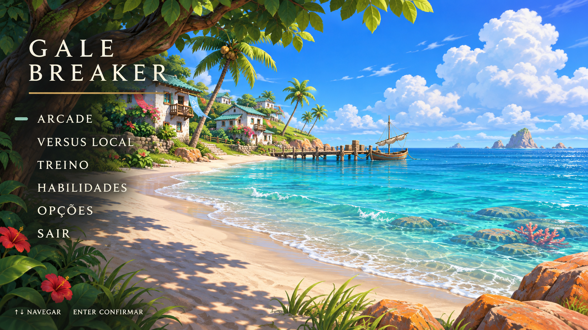
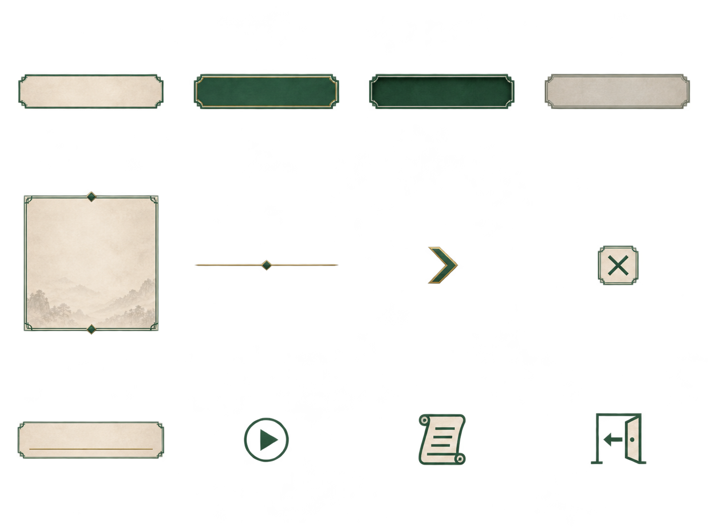
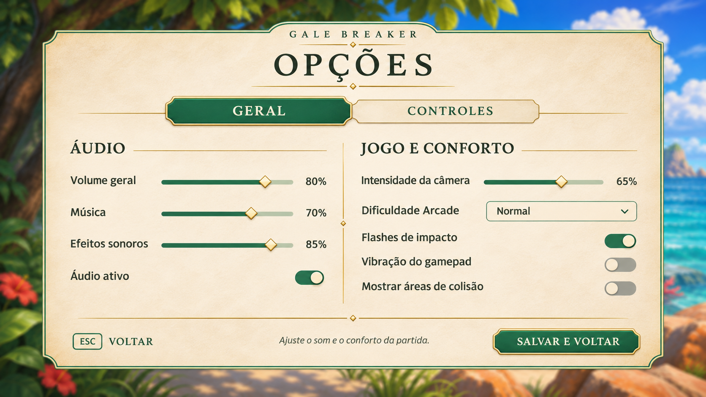
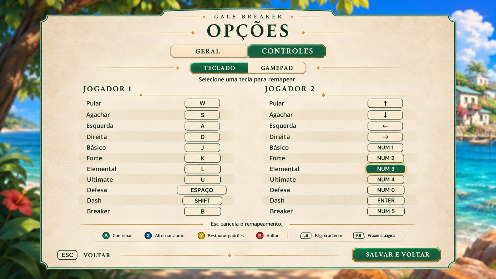
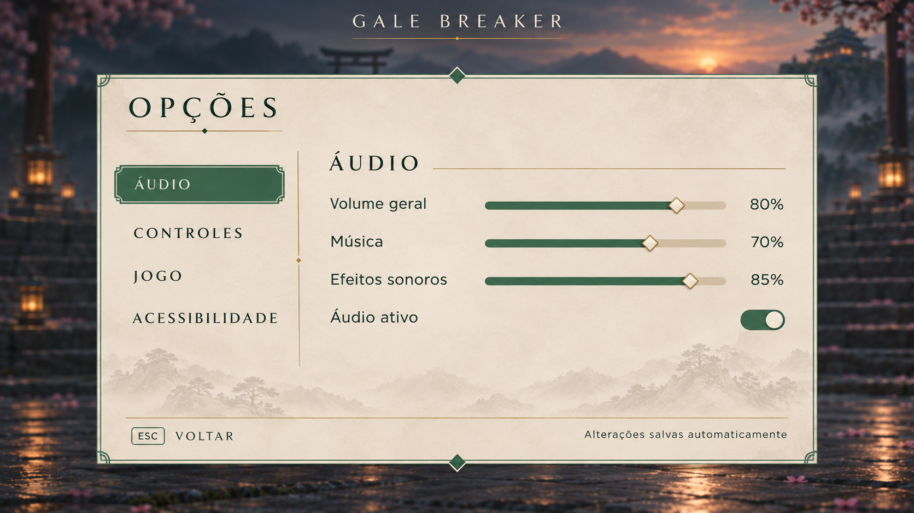

Pausa e opções
Marfim, jade e detalhes discretos de ouro envelhecido. Ver atlas de texturas da praia
Menu principal · Praia

Praia, mar aberto e vila costeira. Cenário original, menu minimalista e sem personagens.Baixar concept
Atlas do menu de pausa

12 componentes com transparência real. Os textos ficam separados para renderização no jogo.Baixar PNG · Mapa dos recortes em JSON
Opções · Geral

Abas Geral e Controles. Áudio e conforto organizados em duas colunas, sem rolagem longa.Baixar ajustes gerais
Opções · Controles

Comandos em português, teclas individuais e destaque para o remapeamento selecionado.Baixar controles
Concept anterior das opções

Categoria Áudio em destaque, controles alinhados e cenário vazio ao fundo.Baixar concept